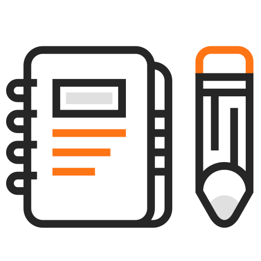

FUNDAMENTOS DA EAD
Na Educação a Distância a pessoa mais importante deste processo é VOCÊ!
Por isso, apresentamos algumas orientaçãoes para você estudar a modalidade a distância e atuar de forma efetiva como aluno online.

Seja organizado
Busque foco
Organize seu tempo